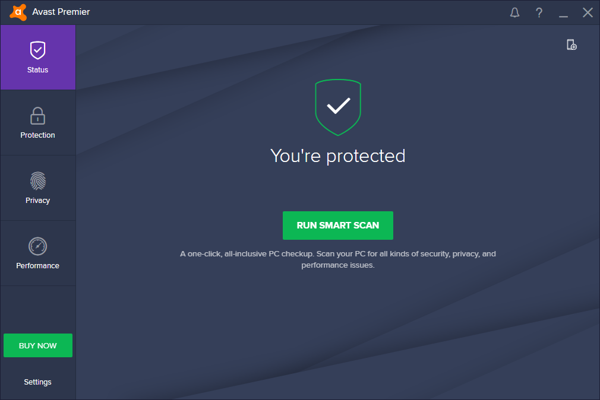
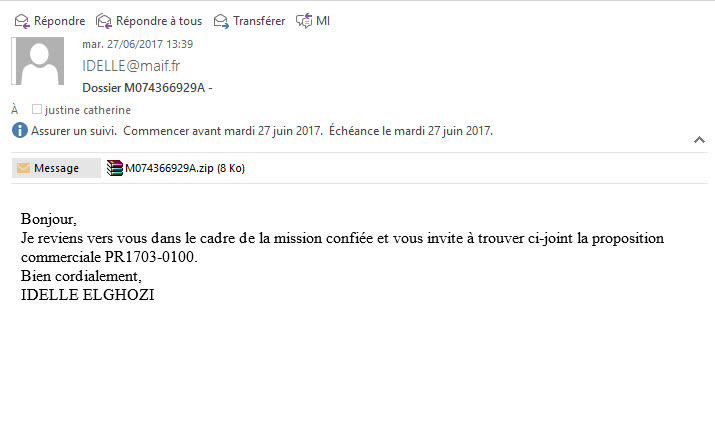
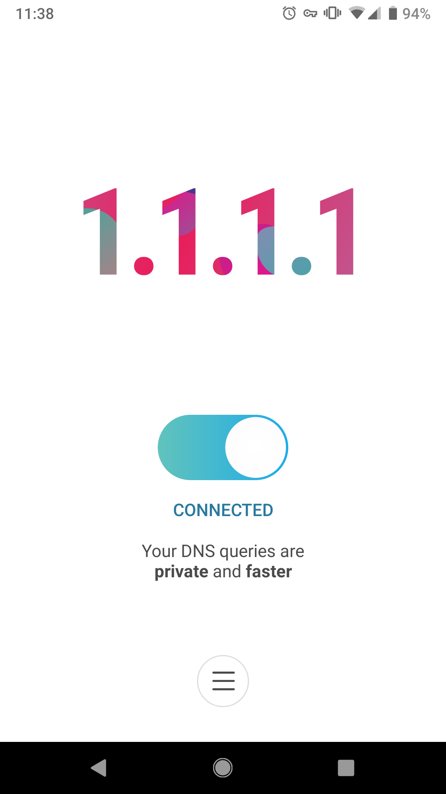

Travail de recherche : Comment protéger ses données personnelles
Il existe plusieurs moyens pour se protéger :Créer un profil sécurisé sur tout les sites que vous fréquentez comme les réseaux sociaux etc...
- Pour ce faire vous pouvez :
- -Mettre votre profil en privé

- -Créer une autre identité numérique
Comme ça en cas de piratage le hacker ne pourra pas remonter jusqu'à vous.
- -Désactiver la géolocalisation pour ne être traqué en permanence
Accepter le MOINS de cookies possible
Pour ce faire vous pouvez :
- -Utiliser une extension de restriction des cookies

Utiliser des mots de passe compliqués
- Pour ce faire vous pouvez :
- -Faire générer vos mots de passe par un générateur de mot de passe

- -Utiliser un password manager pour ne pas les oublier
Eviter d'aller sur des sites en HTTP, privilégier le HTTPSecure
Eviter de se connecter aux WIFIS publics, sinon il faut utiliser un vpn
Vérifier que l'adresse des sites est conformes pour éviter les attaques phishings
- Exemple d'attaque phishing avec Shellpish

Utiliser un VPN (virtual private network)
- Il permet d'établir une connexion cryptée entre votre machine et un serveur connecté à internet
- Vos données ne peuvent donc pas être volées

Utiliser un antivirus comme Avast qui possède un grand panel d'outils pratiques (mais pas McAfee -> logiciel suspect)
- 
Faire attention aux fichiers (pièces jointes etc...) envoyées par des inconnus
- 
- 